Code
p1 <- ggplot(mpg) +
geom_point(mapping = aes(x = displ, y = hwy))
# add faceting using class
p2 <- p1 + facet_wrap(~class, nrow = 2)
p2
mpg can be split into subsets based on class and drv (drive)Two types of faceting are provided by ggplot2:
facet_grid() produces a 2d grid of panels defined by variables which form the rows and columnsfactet_wrap() produces a 1d ribbon of panels that is wrapped into 2dfacet_wrap()Basic syntax:
facet_wrap(facets, nrow = NULL, ncol = NULL, scales = "fixed", labeller = label_both, shrink = TRUE)facets can be specified by ~variable or vars(variable)nrow and ncol specify the number of rows and columns of the facetted plotPlot displ vs hwy for each level of class via faceting with rowwise layout
p1 <- ggplot(mpg) +
geom_point(mapping = aes(x = displ, y = hwy))
# add faceting using class
p2 <- p1 + facet_wrap(~class, nrow = 2)
p2
p1 + facet_wrap(vars(class), nrow = 2)is the same as
p1 + facet_wrap(~class, nrow = 2)to use a columnwise layout, use ncol instead of nrow
Plot displ vs hwy, faceting via cyl and drive
ggplot(mpg, aes(x = displ, y = hwy)) +
geom_point() +
facet_wrap(cyl ~ drv)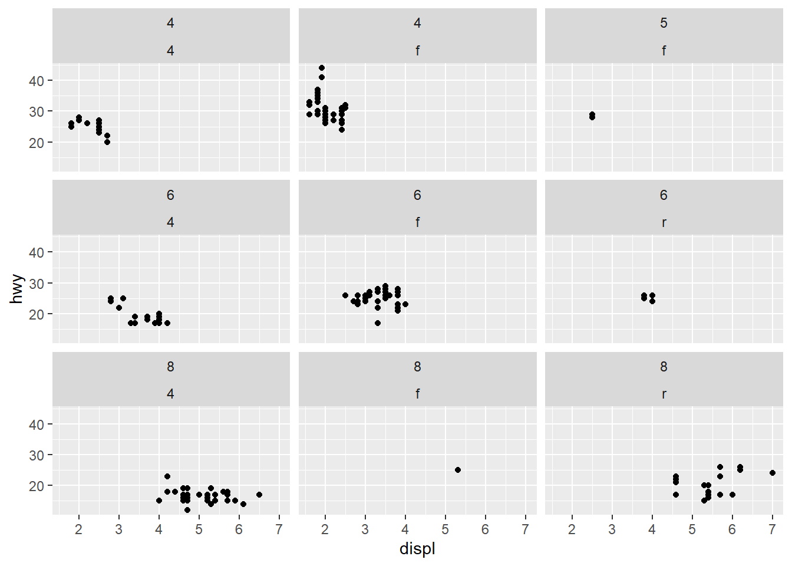
facet_grid()facet_grid forms a matrix of panels defined by row and column faceting variables, it’s basic syntax is:
facet_grid(rows = NULL, cols = NULL, scales = "fixed", labeller = "label_value")facet_grid() with 2 variablesp1 + facet_grid(. ~ drv)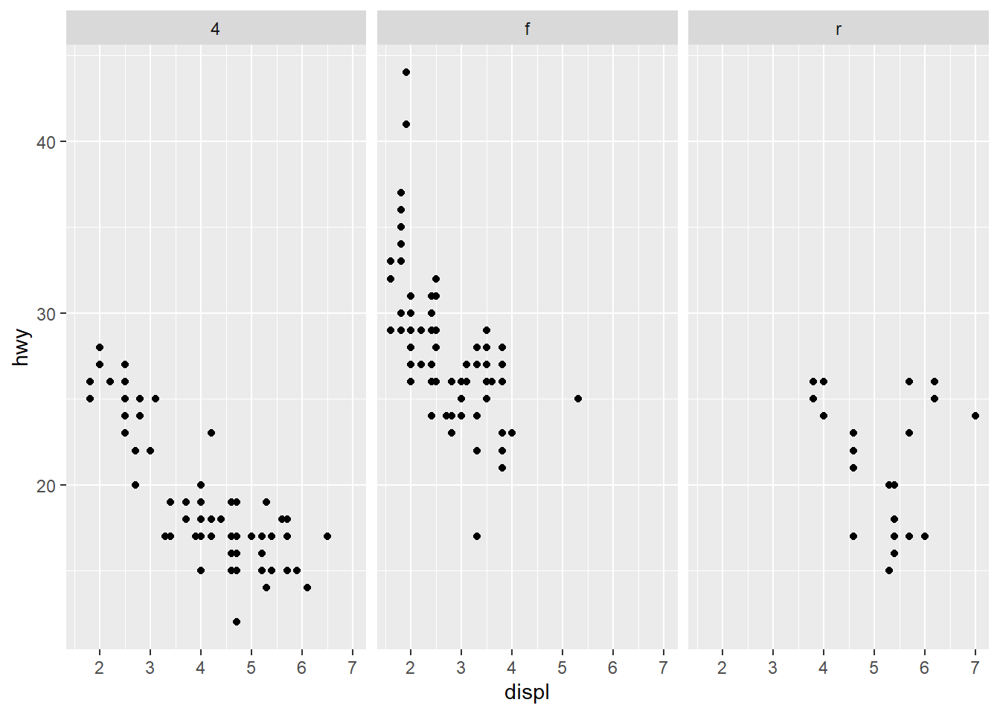
p1 + facet_grid(drv ~ .)
p1 + facet_grid(drv ~ cyl)
facet_grid() with \(\geq\) 3 variablesPlot displ vs hwy faceting with drv and cyl, coloring by class, assigning shapes by manufacturer
mpg1 <- mpg %>% filter(manufacturer %in% c("chevrolet", "toyota"))
ggplot(mpg1, aes(x = displ, y = hwy, color = class, shape = manufacturer)) +
geom_point() +
facet_grid(drv ~ cyl)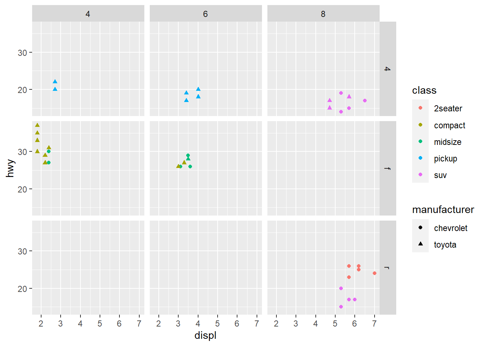
geom_text adds text directly to a plotgeom_label draws a rectangle around textBasic syntax:
geom_text(mapping = NULL, data = NULL, parse = FALSE, inherit.aes = TRUE)
geom_label(mapping = NULL, data = NULL, parse = FALSE, inherit.aes = TRUE)geom_label()plot displ vs hwy and annotate each pair of observations from (displ, hwy) by cyl type
ggplot(mpg, aes(x = displ, y = hwy)) +
geom_point() +
geom_label(aes(label = cyl), nudge_x = 0.05)
ggplot(mpg, aes(x = displ, y = hwy)) +
geom_point() +
geom_label(aes(label = cyl, color = class), nudge_x = 0.05)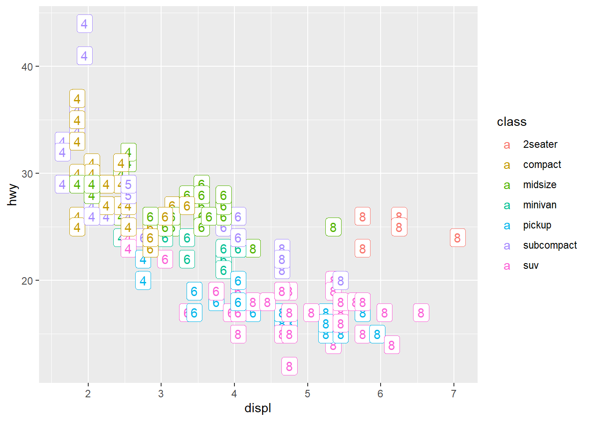
geom_text()ggplot(mpg, aes(x = displ, y = hwy)) +
geom_text(aes(label = cyl))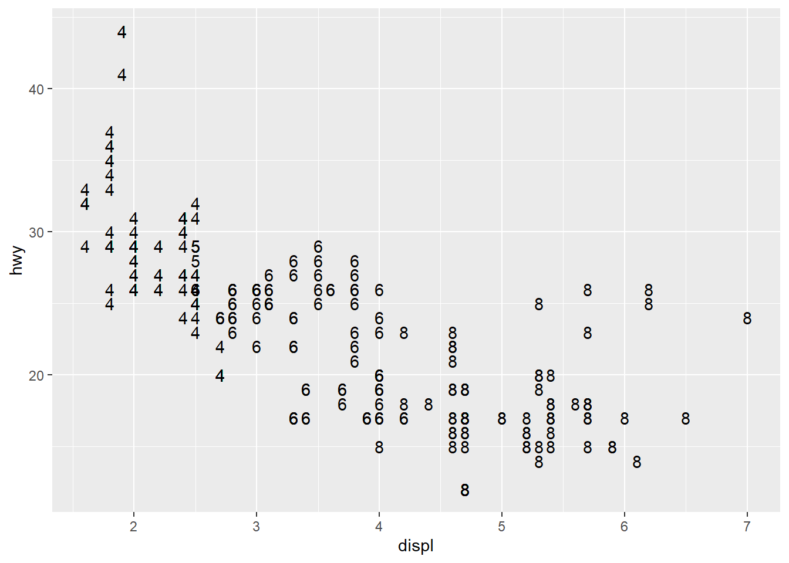
annotate()annotate() adds geometric objects to a plot. But unlike a typical geom function, properties of the annotation are not mapped to variables in the data. Instead they are passed in as vectors
p = ggplot(mpg, aes(x = displ, y = hwy)) +
geom_point()
# add annotation "some text" at (2, 25), (3, 25), (4, 25), (5, 25)
p + annotate("text", x = 2:5, y = 25, label = "some text")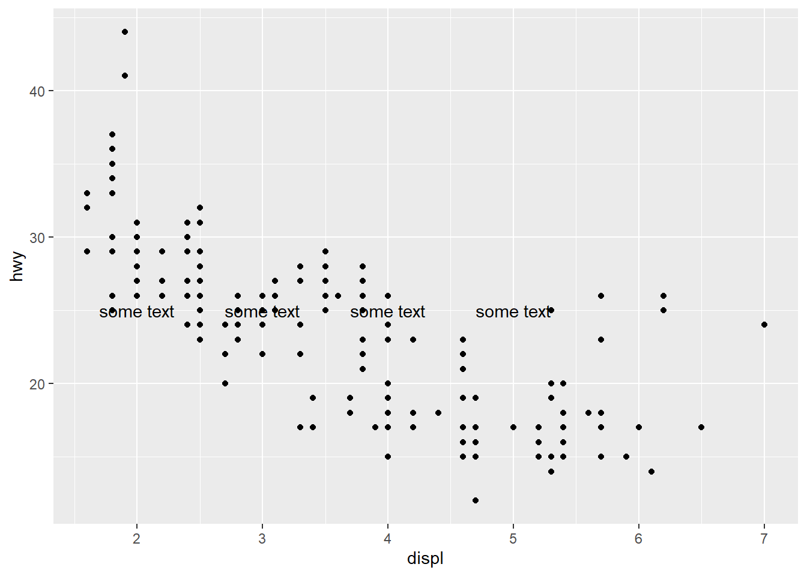
Example 2: add a rectangle via “rect” whose size is determined by xmin xmax ymin ymax
p + annotate("rect", xmin = 3, xmax = 4.2, ymin = 12, ymax = 20, alpha = 0.2)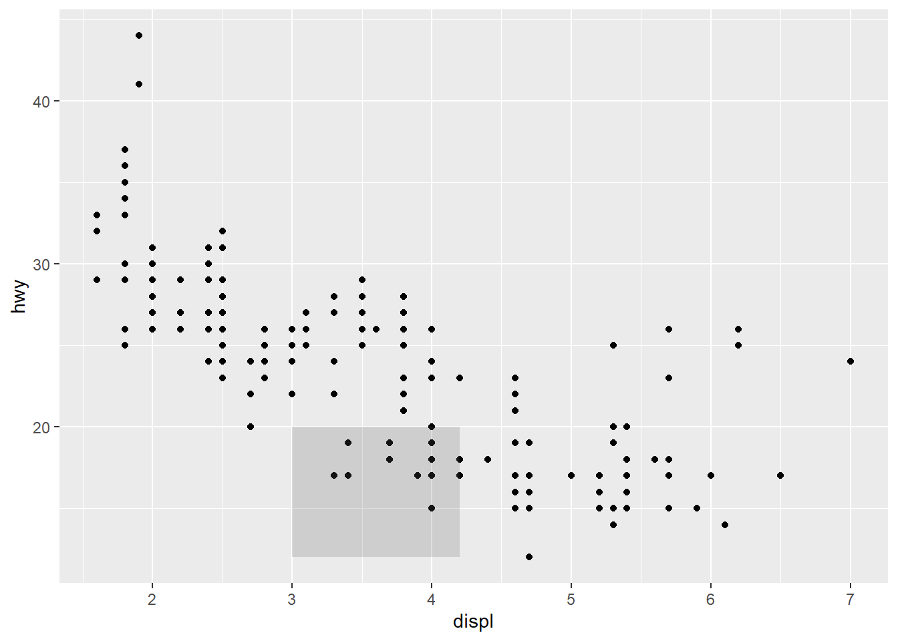
alpha controls the opacity of the the annotation
plot displ vs hwy and add a math expression as annotation
p + annotate("text", x = 4, y = 40, label = "italic(R) ^ 2 == 0.75", parse = TRUE)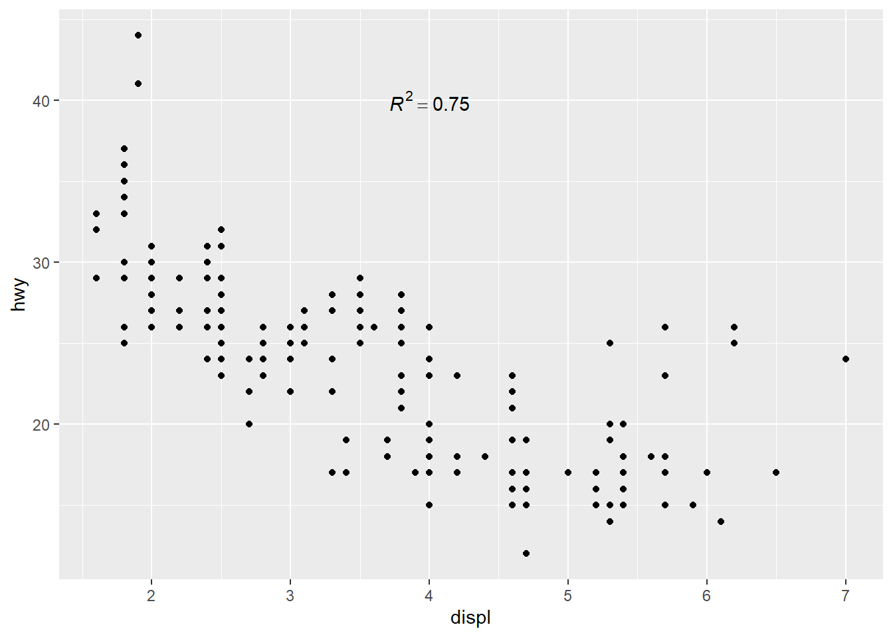
parse converts the string italic(R) ^ 2 == 0.75 into a math expression
#set ranges for both x and y axis
lims(...)
# set range for x axis
xlim(...)
# set range for y axis
ylim(...)p <- ggplot(mpg, aes(x = cty, y = hwy, color=class)) + geom_point()
p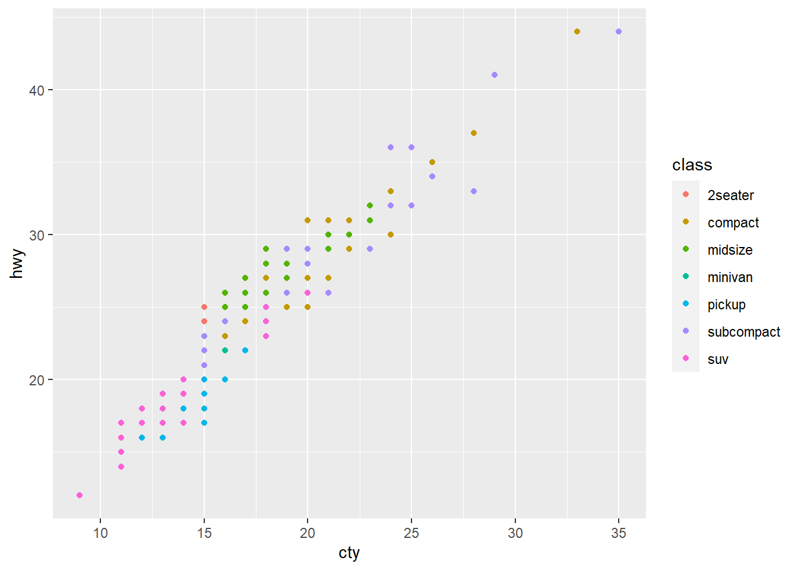
use xlim(c(NA,20)) to set an automatic lower limit
p + xlim(c(NA, 20))Warning: Removed 45 rows containing missing values (`geom_point()`).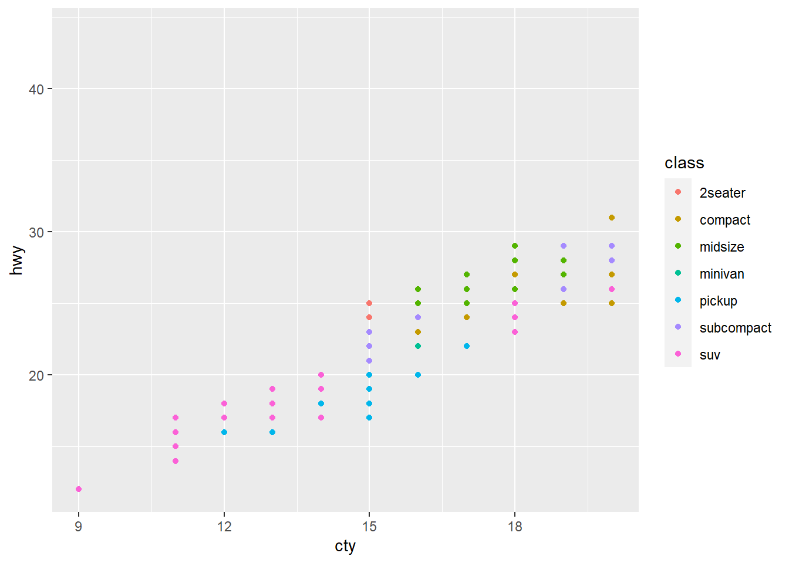
scale_*_continuous()this function controls the x or y axis for continuous variables and often sets breaks, labels, na.value, and/or trans:
scale_*_log10()scale_*_discrete()scale_*_continuous()There are 3 methods for mapping continuous variables to color
scale_color_gradient()scale_color_gradient2()scale_color_gradientn()scale_color_gradient and scale_fill_gradient:
scale_color_gradient2 and scale_fill_gradient2:
These two functions are particularly useful for creating diverging color schemes
scale_color_gradientn and scale_fill_gradientn:
#plot cty vs hwy with default scheme color = displ
p <- ggplot(mpg) + geom_point(aes(x = cty, y = hwy, color = displ))
p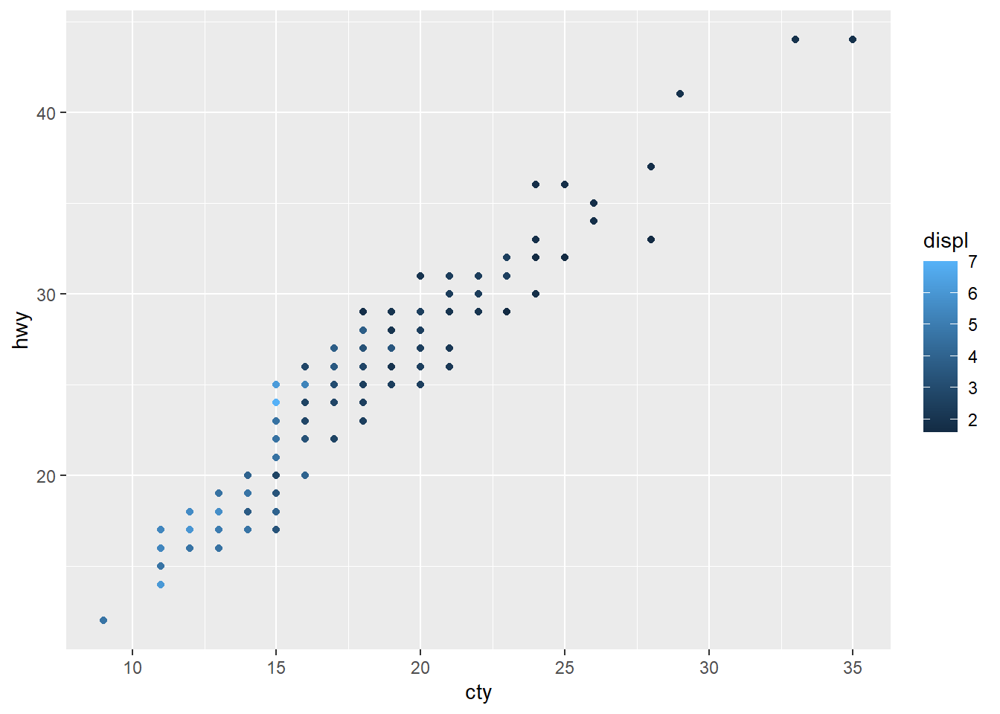
p + scale_color_gradient2("Displacement", low = "gray", mid = "blue", high = "red", midpoint = mean(mpg$displ))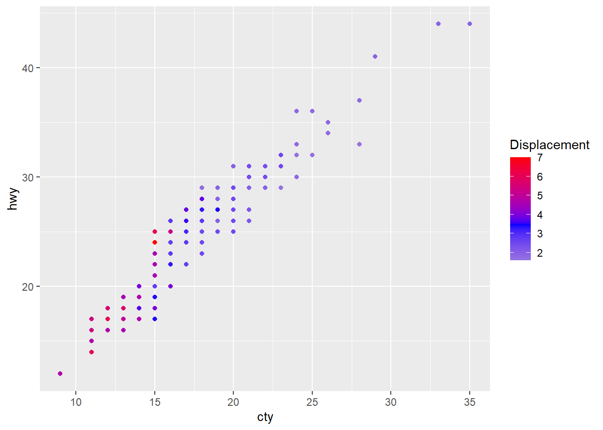
The faithful dataset in MASS records waiting times between eruptions in minutes of the Old Faithful geyser in Yellowstone National Park, and the durations of the eruptions in minutes.
library(MASS)
Attaching package: 'MASS'The following object is masked from 'package:plotly':
selectThe following object is masked from 'package:dplyr':
selecthead(faithful) eruptions waiting
1 3.600 79
2 1.800 54
3 3.333 74
4 2.283 62
5 4.533 85
6 2.883 55Density function \(z = f(x, y)\) for \((x,y) =\) (eruptions, waiting) can be visualized via 2D contours
Obtain density estimate for (eruptions, waiting)
MASS, apply kde2d (2d kernel density estimation) to faithful datasetf2d has 3 columnns, x, y, z, where z is the density estimatef2d <- with(faithful, kde2d(eruptions, waiting), h = c(1, 10), n = 50)
df <- with(f2d, cbind(expand.grid(x, y), as.vector(z)))
names(df) <- c("eruptions", "waiting", "density")
head(df) eruptions waiting density
1 1.600000 43 0.004166514
2 1.745833 43 0.005154933
3 1.891667 43 0.005674180
4 2.037500 43 0.005577152
5 2.183333 43 0.004914896
6 2.329167 43 0.003899692erupt <- ggplot(df, aes(waiting, eruptions, fill = density)) +
geom_tile() +
scale_x_continuous("Waiting time (min)", expand = c(0, 0)) +
scale_y_continuous("Eruption time (min)", expand = c(0, 0))
erupt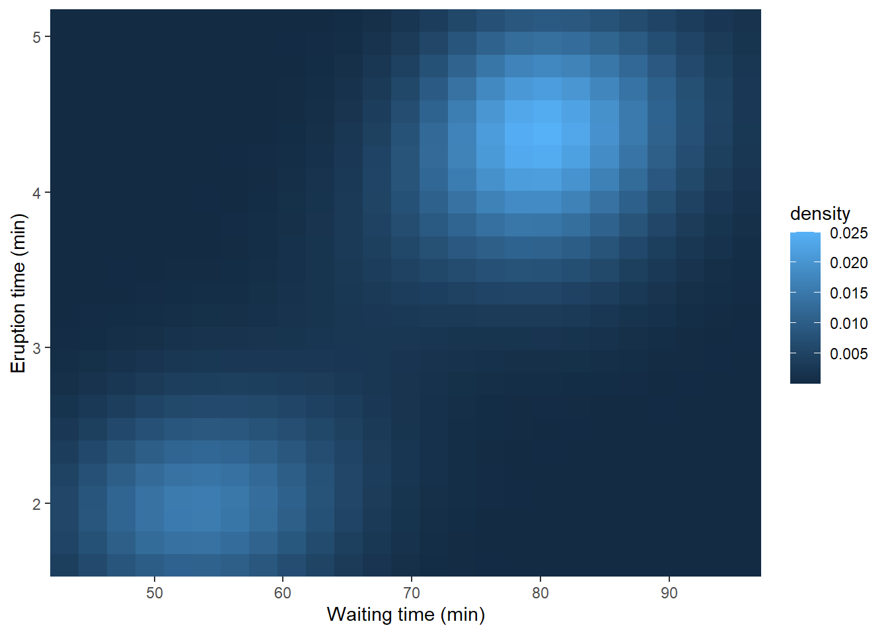
Note the use of
geom_tile() and fill = densityscale_x_continuous and scale_y_continuous to set the axis labels and expand the axis limitserupt + scale_fill_gradient(limits = c(0, 0.04), low = "white", high = "black")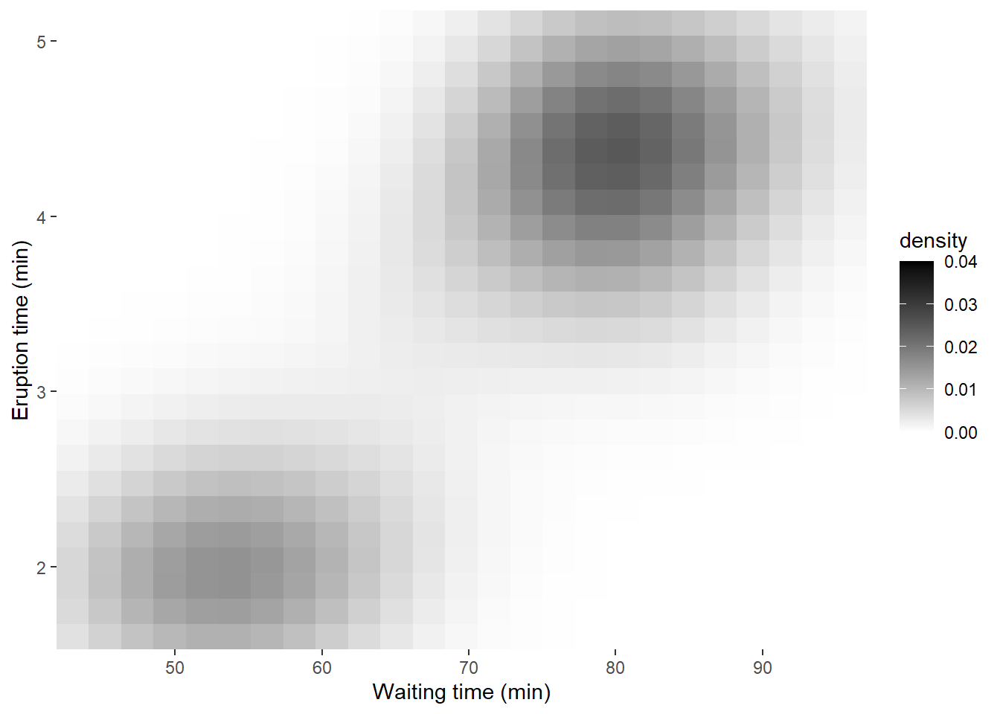
erupt + scale_fill_gradient2(limits = c(0, 0.04), midpoint = mean(df$density))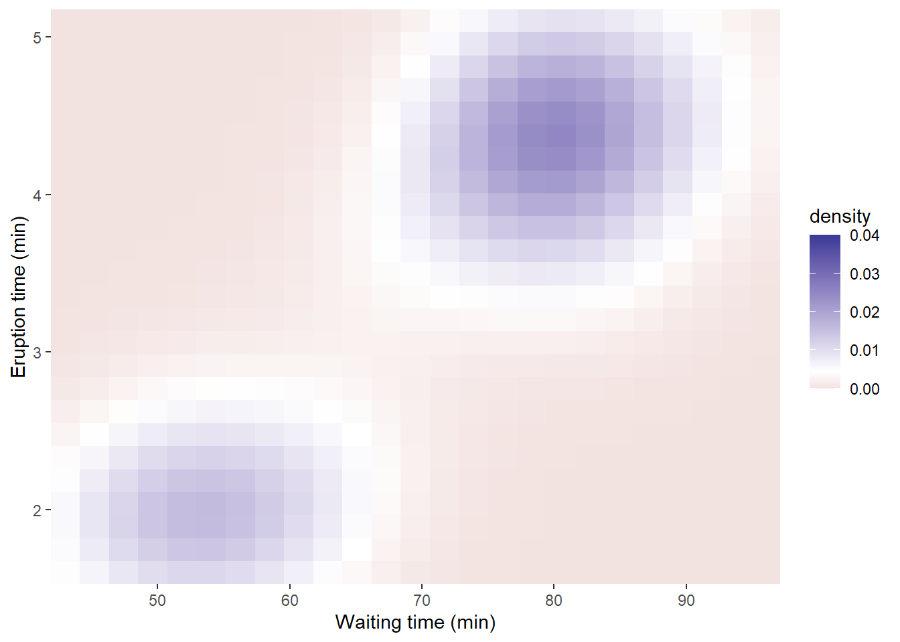
Two methods for color scales for discrete variables:
scale_color_hue() (works well for up to 8 colors)RColorBrewerwe’re going to use the msleep dataset for these illustrations
head(msleep)# A tibble: 6 × 11
name genus vore order conse…¹ sleep…² sleep…³ sleep…⁴ awake brainwt bodywt
<chr> <chr> <chr> <chr> <chr> <dbl> <dbl> <dbl> <dbl> <dbl> <dbl>
1 Chee… Acin… carni Carn… lc 12.1 NA NA 11.9 NA 50
2 Owl … Aotus omni Prim… <NA> 17 1.8 NA 7 0.0155 0.48
3 Moun… Aplo… herbi Rode… nt 14.4 2.4 NA 9.6 NA 1.35
4 Grea… Blar… omni Sori… lc 14.9 2.3 0.133 9.1 0.00029 0.019
5 Cow Bos herbi Arti… domest… 4 0.7 0.667 20 0.423 600
6 Thre… Brad… herbi Pilo… <NA> 14.4 2.2 0.767 9.6 NA 3.85
# … with abbreviated variable names ¹conservation, ²sleep_total, ³sleep_rem,
# ⁴sleep_cyclePlot brainwt vs bodywt and color “point” by vore
p <- ggplot(msleep) +
geom_point(aes(brainwt,bodywt, color = vore)) +
scale_x_continuous(trans="log") +
scale_y_continuous(trans="log")
pWarning: Removed 27 rows containing missing values (`geom_point()`).
brewerp + scale_color_brewer(palette = "Set1")Warning: Removed 32 rows containing missing values (`geom_point()`).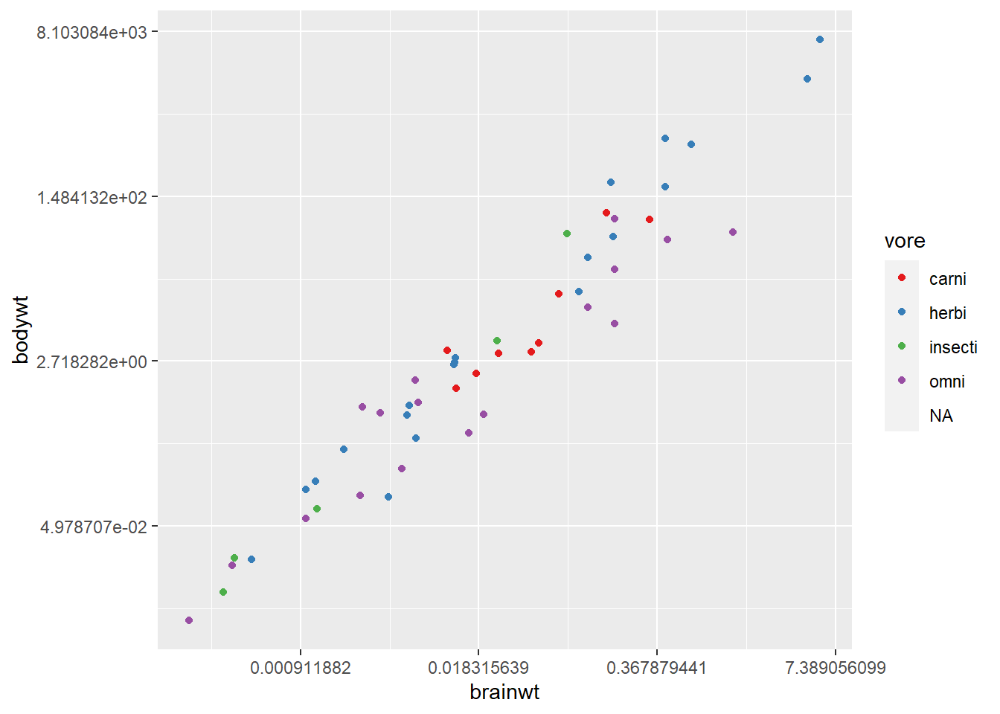
Brief syntax:
theme(
#legend position: right, left, bottom, top, none (default: right)
legend.position = "right",
#legend background
legend.background = element_rect(fill, color, size, linetype),
#legend direction and justification
#i.e. the layout of items in legends (horizontal, vertical)
#default: vertical
legend.direction = NULL,
#legend box
#arrangement of multiple legends (horizontal, vertical)
legend.box = NULL
)Plot displ vs hwy with shape=drv
p <- ggplot(mpg, aes(displ, hwy, shape = drv)) + geom_point()
p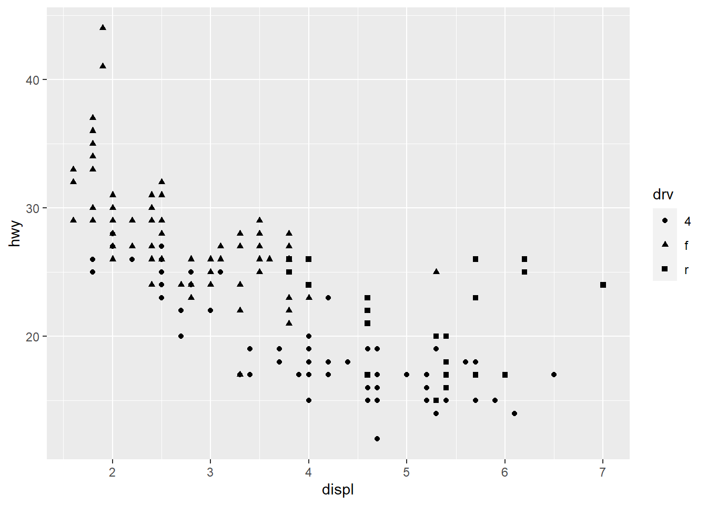
p + theme(legend.position = "top", legend.direction = "horizontal")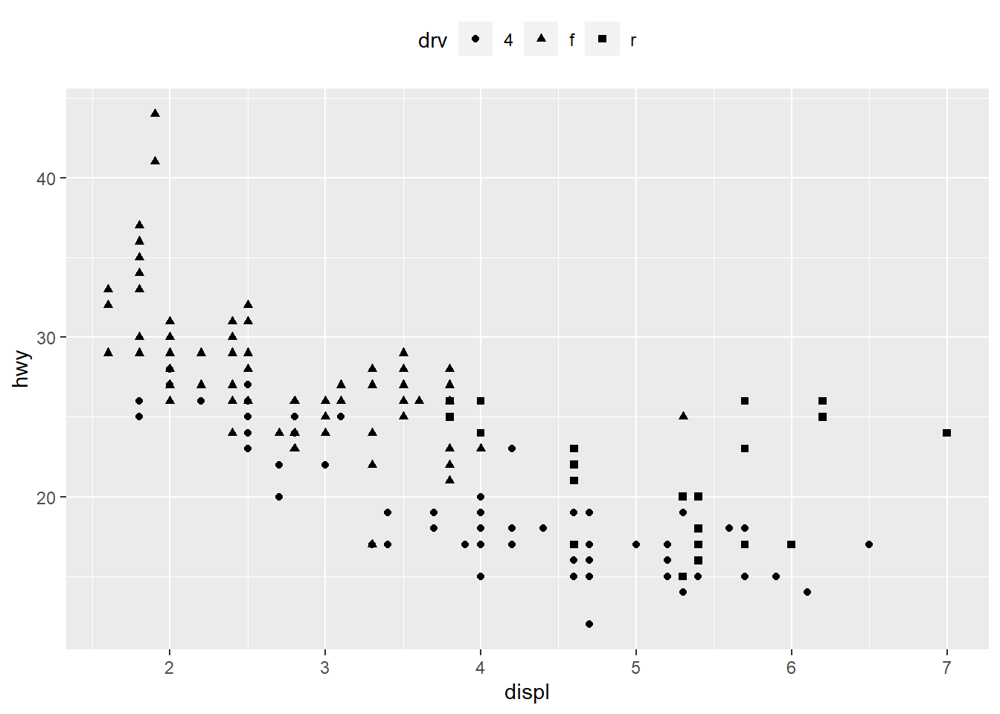
p + theme(legend.position = "none")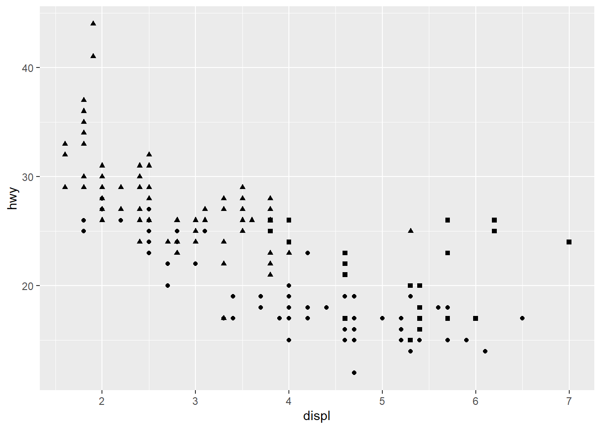
keyp + theme(legend.key = element_blank()) #may result in spacing issues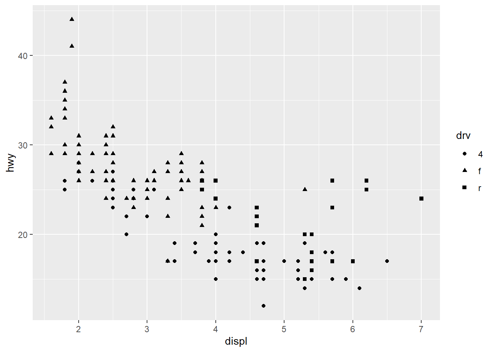
theme(
legend.text = element_text(size = NULL)
legend.title = element_text(size = NULL)
)p <- p + aes(color = cyl)theme(
axis.text.x = element_text(size = 10, angle=0)
axis.title.x = element_text(size = 14, angle = 30)
axis.text.y = element_text(size = 10, angle = 0)
axis.title.y = element_text(size = 14, angle = 30)
)we will use:
paste(..., sep = "")to create a string that contains plotmath syntax/commands, and
expression(...)to create a mathematical expression
plotmath shares some syntax/commands with LaTeX. For example:
alpha…omega for \(\alpha \ldots \omega\)x[y] for \(x_y\) and x[y][z] for \(x_{yz}\)x^y for \(x^y\)pastepaste("x", "trial", sep = "")[1] "xtrial"paste("x", "trial", sep = " ")[1] "x trial"expressions1 = expression(paste("the square root of 2 is ", sqrt(2), sep = ""))
s2 = expression(paste("double subscript ", x[1][2], sep = " "))
d1 <- data.frame(cbind(1:10, 1:10)); names(d1) <- c("x1", "y2")
ggplot(d1, aes(x1, y2)) + geom_point() + xlab(s1) + ylab(s2)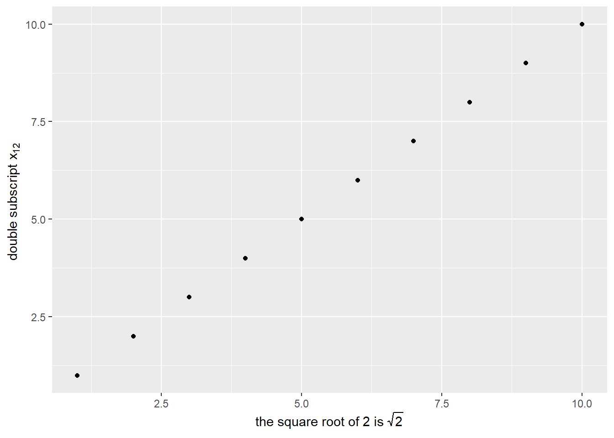
plot displ vs hwy with color = drv
p <- ggplot(mpg, aes(displ, hwy, color = drv)) + geom_point()4, f, and r to \(\alpha_1\), \(\beta^2\), and rcolor aestheticdrvStg <- c(expression(alpha[1]), expression(beta[2]), expression(r))
#modify legend title
p2c <- p + labs(col=expression(paste("Legend ", zeta))) +
scale_color_discrete(labels = drvStg)
p2c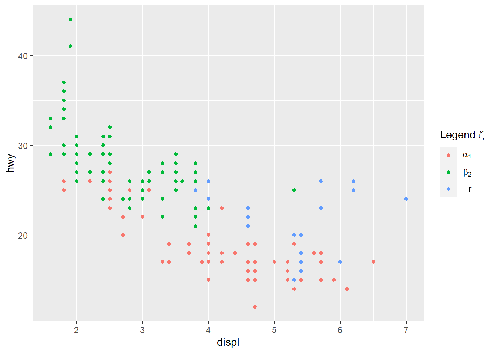